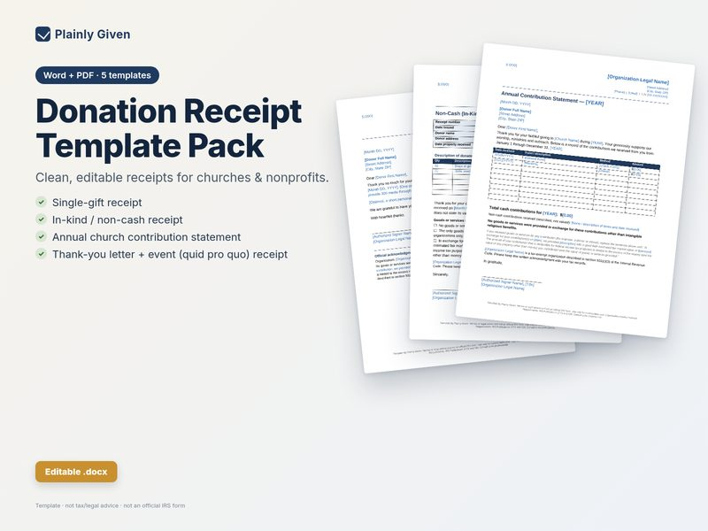

Word + PDF · 5 templates
Donation Receipt Template Pack
Five clean, editable donation receipt templates for churches and small nonprofits, each with the acknowledgment wording described in IRS Publication 1771.
$9 one-time
Buy now: $9Free template
What's included
| Template | Use it for |
|---|---|
| Single Donation Receipt | One cash, check, card or online gift |
| Non-Cash (In-Kind) Donation Receipt | Donated goods, described without a value |
| Annual Church Contribution Statement | Year-end summary with dated gift list and total |
| Thank-You Letter with Receipt Language | A warm letter with an official acknowledgment box |
| Event / Quid Pro Quo Receipt | Galas, dinners, tickets and auctions over $75 |
- Editable in Microsoft Word, Google Docs, Pages and LibreOffice
- Printable PDFs for filling in by hand
- Highlighted fields so nothing gets missed
- Each template ends with a short "how to use" page
Need statements for a whole congregation? The Statement Generator builds them automatically.
Disclaimer: Plainly Given provides templates and general information for record-keeping. This is not tax or legal advice, and our templates are not official IRS forms. Use them only to acknowledge contributions your organization actually received. Rules change and individual situations differ; consult a qualified tax professional.